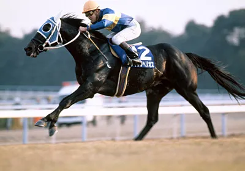
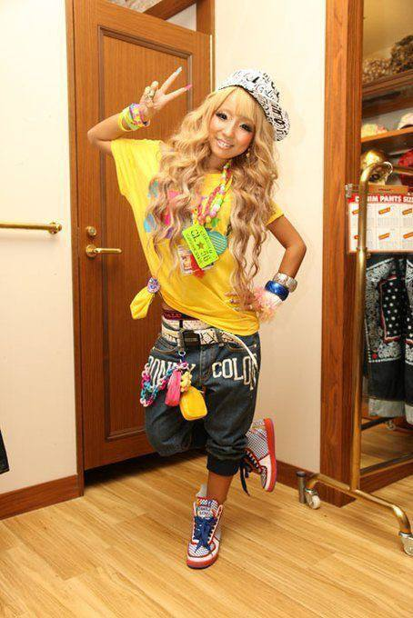
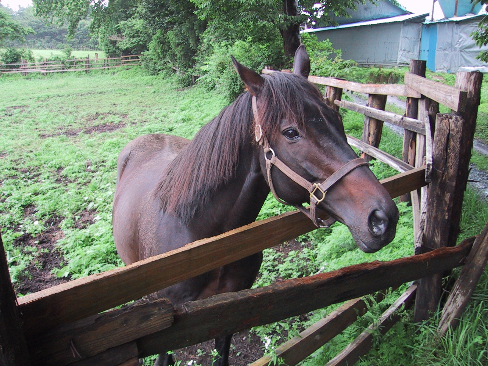
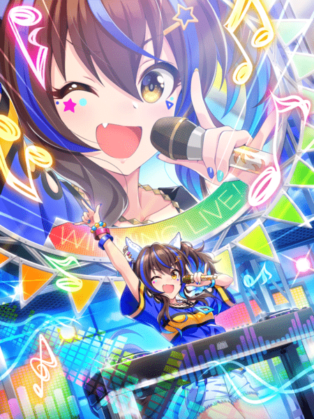
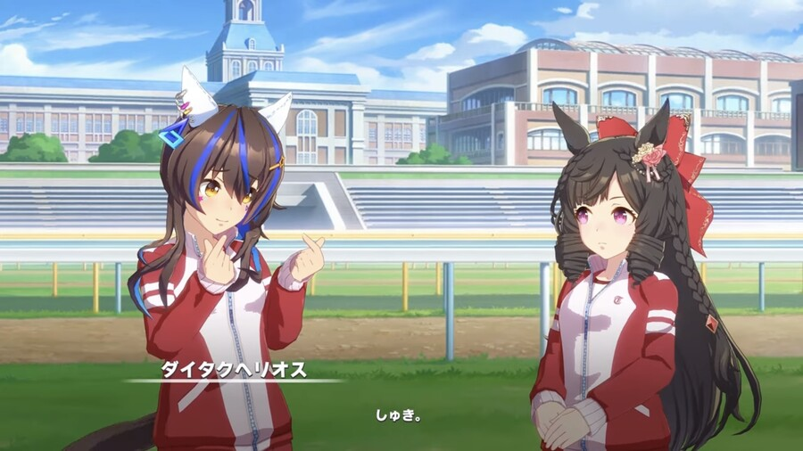

Дайтаку Гелиос - девушка с темно-каштановыми волосами средней длины с голубым
мелированием и заколкой в виде звезды.
Ее гоночный наряд состоит из синей футболки с черно-желтой полосой посередине и коротких
шорт с поясом. Она также носит синие сапоги.
В Uma Musume у всех лошадей есть украшение (обычно бантик) на одном из ушей. Украшение на правом
ухе означает, что настоящая лошадь была жеребцом, на левом ухе — кобылой. У Дайтаку Гелиос
сережки и цепочка на правом ухе, т.к Дайтаку Гелиос в реальной жизни — жеребец.
Цвета её гоночного наряда напоминает жокейский шелк настоящего Дайтаку Гелиос.

Настоящий Дайтаку Гелиос
Фанаты настоящего Дайтаку Гелиос думали, что он умеет читать новости.
Каждый раз, когда он являлся фаворитом в гонке, он проигрывал; когда он им не являлся,
он выигрывал.
На этом основан её характер и дизайн в игре, вдохновленный японской субкультурой гяру, потому что
её представители любят быть модными и находится в тренде.
Если точнее, она является разновидностью гяру под названием амекаджи (amekaji).

Амекаджи стиль одежды
О Дайтаку Гелиос

Дайтаку Гелиос на ранчо Ямаучи
Дайтаку Гелиос (10 апреля 1987 г. – 12 декабря 2008 г.) – японский скаковой конь и
жеребец. Он выиграл Чемпионат на милю (GI) в 1991 и 1992 годах, став второй лошадью в истории после Нихон Про Винер,
завоевавшей два этих титула подряд.
Имя на японском: ダイタクヘリオス
История гонок: [10-6-1-18], включая победы в Чемпионате на милю в 1991 и 1992 (GI).
Интересные факты

Дайтаку Гелиос является одним из немногих персонажей в игре, который улыбается и машет
зрителям, даже если занимает не призовое место в конце гонки. В реальной жизни у Дайтаку Гелиос
было прозвище "Смеющаяся лошадь", потому что во время забега он необычно поднимал голову и открывал рот,
как будто смеялся.
Настоящий Дайтаку Гелиос показывал себя лучше в гонках, в которых участвовала Дайчи Руби.
Потому они стали довольно популярной парочкой среди фанатов. И потому в игре Дайтаку Гелиос
безответно влюблена в Дайчи Руби.

Дайтаку Гелиос и Дайчи Руби в игре
Однажды настоящий Дайтаку Гелиос притворился мертвым и до смерти напугал своих конюхов.
На это есть отсылка в игре. В её профиле после достижения пятого уровня дружбы открывается факт:
"Она притворялась мертвой, чтобы напугать своих родителей".
В игре в разговоре в холле она упоминает, что у нее есть “сумасшедшая тетя” по имени
“Я-тян”. Это отсылка к Кабурая О, настоящему дяде лошади, по прозвищу “безумный бегун”.
У Дайтаку Гелиос в игре 68 320 подписчиков в Umastagram, что отсылает на 683,2 миллиона йен,
которые он заработал за свою карьеру в реальной жизни.